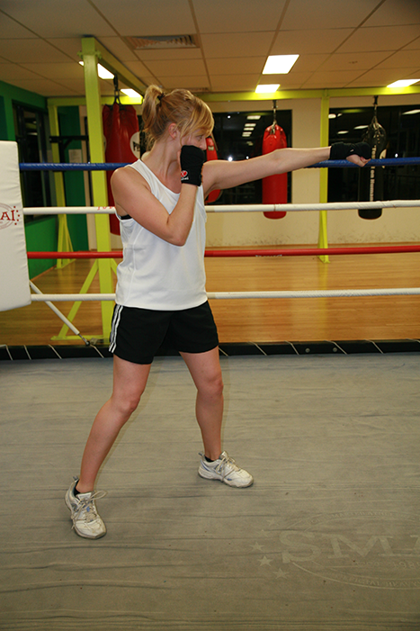

Your chin is tucked; upon landing your arm is extended, but not to the point of hyperextension.
Movements
Objective: Accelerate, turn, recover! The jab is the most frequently used
punch, used 95% of the time.
- Left Jab: Start from your boxer’s stance.
- Throw directly from the chin in a straight line keeping the elbow pointed down towards the floor.
- The jab is thrown to the head 90% of the time but it can be thrown at different angles.
- Hold your hand up high with your elbow in close to your body.
- Push off your back foot like a pitcher.
- Step forward and extend your arm straight out at your target.
- Rotate your fist over (thumb turns inward) as you reach full extension.
- Drop your chin to your shoulder to protect your head.
- Connect with your hand at the same time the toe of your front foot touches the ground.
- Arm extended
- Exhale on extension, inhale on recovery
- Punch through opponent
- Hold position of right hand
- Remember: The defending hand should always be in place to defend against counter attacks.
Jab Drills
Face your sparring partner in boxers stance wearing full protective gear which includes: mouthguard, headgear,
wraps and gloves. Gradually build up to full speed, but begin by throwing punches at half speed or slower.
Either partner should alternate defensive and offensive roles.
Perform from boxers’ stance |
Start at half speed gradually build to full speed |
Alternate offensive and defensive |
Jab/duck |
Jab/catch |
Jab/pull |
Jab/inside slip |
Jab/outside slip |
Jab/parry |
Jab with focus pads or heavy bag |
Jab shadow boxing or speed bag |
Jab with speed bag or heavy bag |
Jab with heavy bag or pad work |
Practice your jabs on shadow boxing or pad work to start. Additional practices can be completed with the focus speed-bag.
Bags, pad work and shadow boxing
Use your left hand only on the heavy bag to perform the following lesson. Use your right hand if you are southpaw (left-handed/unorthodox)
Perform from boxer’s stance |
30 jabs at 75% speed |
30 double jabs at 50% speed |
15 triple jabs at full speed |
50 combination head jab/body jab |
Note: For variation you can include pad work after the bag work has been completed. Beware of footwork while
throwing punches. Move in all directions; forward, backward and to the sides.